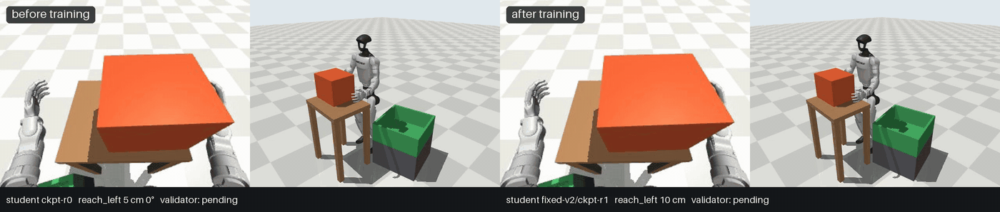
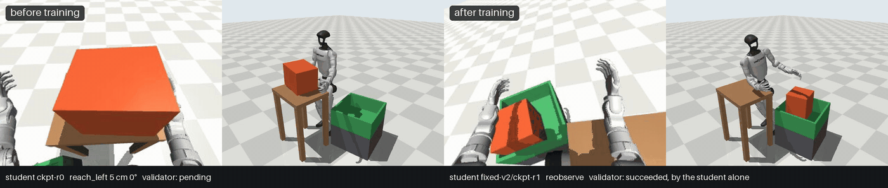
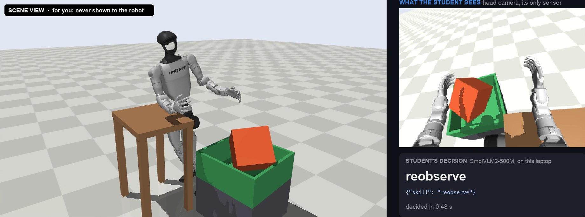
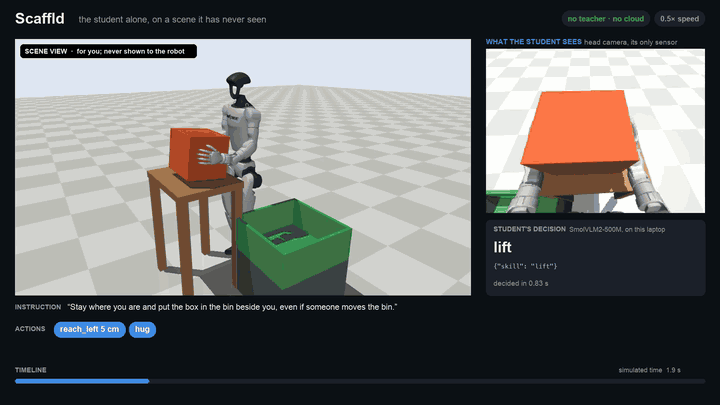
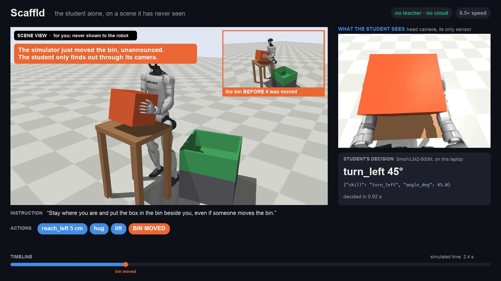
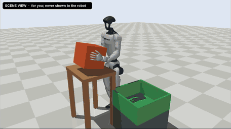
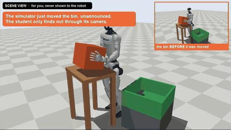
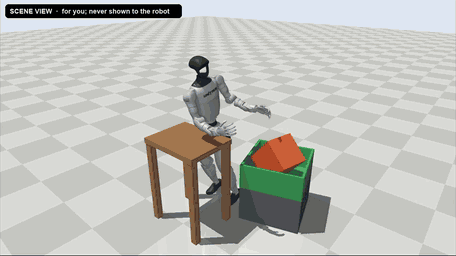
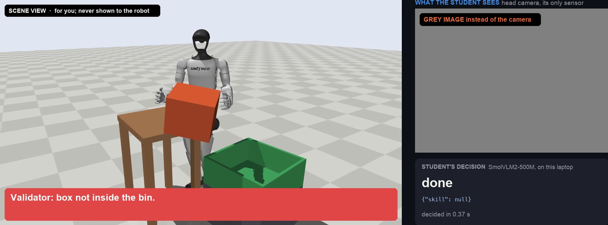

Scaffld
Stop driving robots to teach them. An AI teacher drives them instead.


Succeeded, aloneTraining robots require substantial time and human labour
by remote control, recording examples for the robot to copy
the bin in a new place, the box at a new angle
more hours of driving for every new failure
to record 76k demonstrations by remote control: what robot skills cost at research scale (one cell, one month)
Humanoids are entering real warehouses.
moved by Agility's Digit at GXO's Flowery Branch, GA site; two more US GXO sites from early 2027
Every new job they are given hits this bottleneck.
For a warehouse team, a new task becomes a sentence, not months of teleoperation
Argon writes the task, teaches it, and a validator decides what the robot learns
Sentence in
“Stay where you are and put the box in the bin beside you, even if someone moves the bin.”
Argon writes the task: 24 sStudent tries first
The untrained student attempts the sealed scenes alone
Untrained: 0/20Diagnose
Argon reads each failed trial: its frames, skill calls and the validator’s reason
10/10 failures diagnosed correctlyTeach
8 Argon teachers demonstrate the fix the diagnosis calls for
The validator kept 56 of 60Fine-tune
SmolVLM2-500M LoRA, on accepted teacher steps only
605 examples, 2.1 GB peakExam again
The student tries again: 20 sealed scenes, no teacher, 0 cloud calls
18/20One measured pass. The untrained first try (0/20) ran separately on the same seeds; 10/10 is from repair round 1. Built as an open-source Python pipeline, CLI and live dashboard.
Camera in, skills out. Ground truth only for the judge
Unitree G1, 29 DoF

camera in: head cameraSmolVLM2-500M + LoRA
whitelist, clamps, refusals
IK + joint PD; Unitree RL legs
ground truth → verdict in words
writes the task, diagnoses, demonstrates
accepted teacher steps only
Top row: the deployed loop, on one laptop, 0 cloud calls
Bottom row: teaching, from one typed sentence
ground truth reaches only the validator
per student decision on the laptop GPU, 0 cloud calls (n = 326)
peak student memory of a 3 GB edge budget (v1/v2 exam)
Within budgetmedian per Argon call, cloud, teaching only (n = 3,551)
Can it still finish when the bin moves?
The trained student acts alone—without help from the teacher.


Bin moves here
The robot picks up the box.

Bin moves hereWe move the bin after the lift.

The robot puts the box in the bin.
This example succeeds. Across 20 held-out scenes with the bin moved, the student succeeds in 17.
The results before and after training
Failed scenes: 3 and 10; with the bin moved, 4, 10 and 14. Both: exact McNemar p < 0.001, paired by seed; a re-run reproduced every seed.
after one sentence of teaching (untrained model 0/20; n = 20)
with the bin moved after the lift (untrained 0/20)
Copes with the moveso the demos teach it when to stop
It acts on what it sees
Camera
19/20It twists until the bin is under the box, then places.
Without camera
0/20
MissedSame scene, same student, one twist and it misses.
ControlSame checkpoint, seeds and machine (Mac); only the image differs; n = 20 each.
Lessons aimed at failures raise success when things move
overall p = 0.19; bin further ahead 4/20 → 14/20, p = 0.006
v2 added recovery and box-moved demos (52 → 117), so targeted lessons and more demos aren't separated.
No humans in the loop. No cloud calls at run time
of human input: 0 teleoperated steps (of 584), 0 labels
of training on one laptop GPU; 605 examples
for the whole skill, 0 at deployment
Bad lessons are rejected, not used for training
Validator
Judges every demo from ground truth, in code, and rejects
- falls
- joint-limit violations
- objects passing through each other
Rejected, not used for training
replay exactly
are refused before anything moves
every skill is chosen from the newest camera frame
pin these rules
What it can't do yet
| Limit | Detail | Status |
|---|---|---|
| Simulation only | MuJoCo so far, a real robot is next. | Simulation |
| One task family | Box into a bin, learned at the skill level. | Scope |
| No re-aiming yet | 1/20 with the bin moved beyond its training range (125°, on a Mac); it keeps its learned routine, while the teacher re-aims. | Not passed |
| Standing for the loop | The submitted loop runs with fixed feet. | Scope |
| Walking student | 2/20 vs 0/20 untrained, not yet significant (n = 20); the teacher walks, 69/100 demos accepted. | Not yet significant |
For a warehouse team, a new task becomes a sentence, not months of teleoperation
A real Unitree G1